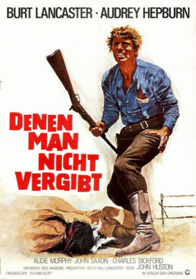

#8924 Denen man nicht vergibt
Alternativ: The Unforgiven
 
 IMDB-Wertung: 6.7 / 10
IMDB-Wertung: 6.7 / 10  Metascore: 0
Metascore: 0 
Mathilda Zachary Lilian Gish und ihre Kinder bewirtschaften eine kleine Farm in Texas. Der Zusammenhalt der Familie wird auf eine harte Probe gestellt, als bekannt wird, dass Tochter Rachel Hepburn nicht Mathildas eigenes Kind, sondern indianischer Abstammung ist. Einer ihrer eigenen Brüder stellt sich gegen Rachel, und die weißen Nachbarn gehen auf Distanz. Als die aufgebrachten Indianer das verlorene Stammesmitglied zurückfordern und einen Angriff auf die Farm vorbereiten, kommt es zur Katastrophe...
Jahr: 1960
Dauer: 121 Minuten
FSK: 12
Land: USA Studio: United ArtistsTonspuren:
Untertitel:
Auflösung: 1080p (1920x816) Größe: 10076 MB
Genre: Drama, Western, Liebe
Regisseur:  John Huston
John Huston
Drehbuch: Ben Maddow
Soundtrack: Dimitri Tiomkin
Darsteller:
 Burt Lancaster als Ben Zachary
Burt Lancaster als Ben Zachary Audrey Hepburn als Rachel Zachary
Audrey Hepburn als Rachel Zachary Audie Murphy als Cash Zachary
Audie Murphy als Cash Zachary John Saxon als Johnny Portugal
John Saxon als Johnny Portugal- Charles Bickford als Zeb Rawlins
- Lillian Gish als Mattilda Zachary
 Albert Salmi als Charlie Rawlins
Albert Salmi als Charlie Rawlins- Joseph Wiseman als Abe Kelsey
- June Walker als Hagar Rawlins
- Kipp Hamilton als Georgia Rawlins
- Arnold Merritt als Jude Rawlins
- Doug McClure als Andy Zachary
 Carlos Rivas als Lost Bird
Carlos Rivas als Lost Bird
Datei: X:\HD-Western-1960-1979\Denen man nicht vergibt (1960, FSK12, 1920x816).mkv seit 07.05.2018
Festplatte: HD Eastern+Western
 Es gibt insgesamt 110 Filme in der Gruppe 'HD-Western-1960-1979'
Es gibt insgesamt 110 Filme in der Gruppe 'HD-Western-1960-1979'